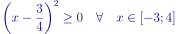

Question 1
Trouver les antécédents de 0 par la fonction f revient à résoudre l'équation f(x)=0

Les antécédents de 0 par la fonction f sont
Question 2
Exemple de calcul pour x = -3
En procédant de la même manière pour les autres valeurs de x, on peut compléter le tableau demandé:
| x |
-3 |
-2 |
-1 |
0 |
1 |
2 |
3 |
4 |
| f(x) |
27 |
14 |
5 |
0 |
-1 |
2 |
9 |
20 |
Question 3
On remarque qua la fonction f est décroissante sur [-3;1] puis croissante sur [1;4].
La fonction f n'est pas strictement croissante ou strictement décroissante sur [-3;4] donc elle n'est pas monotone sur cet intervalle.
Question 4
Le tableau seul ne permet pas de trouver le minimum de la fonction f
Question 5a
On factorise par 2, il vient:
En posant a=x et b=3/4, on peut écrire:
En reconnaissant l'identité remarquable , on peut écrire:
En remplaçant a et b par leurs valeurs respectives, on conclut:

Question 5b
 car un carré est toujours positif
Ce qui signifie que l'image de 3/4 par la fonction f est le minimum de la fonction f sur l'intervalle [-3;4].
On peut s'amuser à calculer ce minimum. Il suffit de remplacer x par 3/4 dans l'expression de la fonction f.
Je vous épargne le calcul, on obtient:

 -Numerics
-Numerics